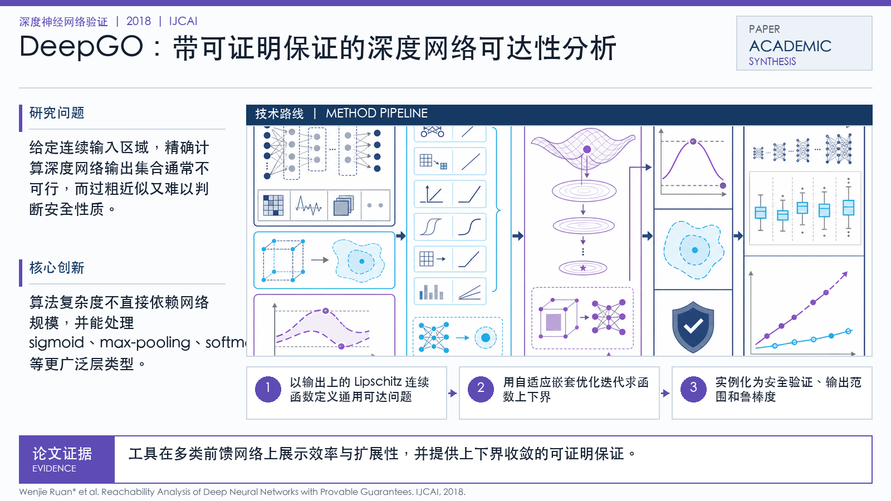

Problem
解决的问题
给定连续输入区域，精确计算深度网络输出集合通常不可行，而过粗近似又难以判断安全性质。
Verification on DNNs · 2018 · IJCAI
Reachability Analysis of Deep Neural Networks with Provable Guarantees
Problem
给定连续输入区域，精确计算深度网络输出集合通常不可行，而过粗近似又难以判断安全性质。
Value
工具在多类前馈网络上展示效率与扩展性，并提供上下界收敛的可证明保证。
Paper-grounded Academic Summary
该代表页依据原文摘要、贡献段与方法图注生成。方法视觉由 ImageGen 按论文证据逐篇绘制，中文研究问题、技术路线、创新点与实验结论采用确定性排版，以保证内容与字符准确。
打开原文 PDF
Technical Route
Innovation